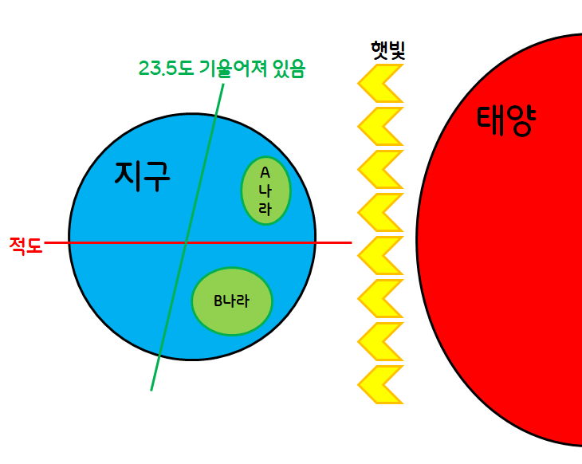

세계에 나타나는 여러 기후

적도에서 극지방으로 갈수록 햇빛을 받는 양이 점점 줄어들기에 기온이 내려간다.
열대 기후
연중 일사량이 높고, 가장 추운 달의 평균 기온이 18°C 이상이다.
건조 기후
연 강수량이 500mm 미만이다.
온대 기후
계절의 변화가 뚜렷하다. 가장 추운 달의 평균 가온이 -3~18°C이다.
냉대 기후
기온의 연교차가 크다. 타이가라 불리는 침엽수림이 분포한다.
한대 기후
기온이 낮아 나무가 자라지 못한다. 가장 따뜻한 달의 평균 기온이 10°C 미만이다.
고산 기후
해발 고도가 높은 곳에는 100m마다 0.5도씩 기온이 내려간다. 따라서 적도와 가깝고, 해발 고도가 높은 지역에서 나타나며, 일 년 내내 온화한 기후가 나타난다.